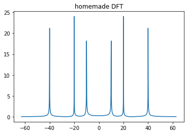
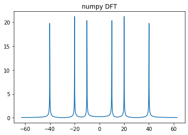
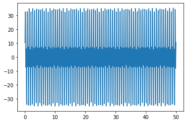
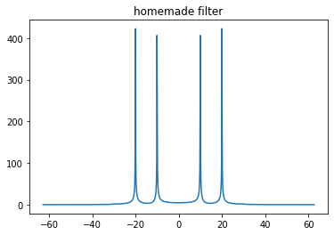
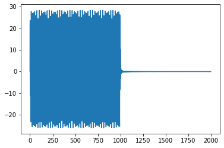
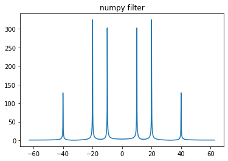

Finite Impulse Response Filtering¶
- date
31 oct 2019
Continuous Fourier Transform¶
\[\begin{split}\begin{align*}
& \boxed{x\leftrightarrow k={2\pi\over \lambda} \qquad t\leftrightarrow \omega={2\pi\over T}=2\pi f} \\
& \tilde{f}(k)={1\over\sqrt{2\pi}} \int_{-\infty}^{\infty} e^{-ikx}f(x)dx\\
& f(x)={1\over\sqrt{2\pi}} \int_{-\infty}^{\infty} e^{ikx}\tilde{f}(k)dk\\
& f(x)*g(x)=\int_{-\infty}^{\infty}f(y)g(x-y)dy \\
& F\{f(x)*g(x)\} =\sqrt{2\pi} \tilde{f}(k)\tilde{g}(k)\\
&\sqrt{2\pi} F\{f(x)g(x)\} = \tilde{f}(k)*\tilde{g}(k)\\
\end{align*}\end{split}\]
Discrete Fourier Transform¶
In actual implementations of DFT (numpy, tensorflow…), the algorithm doesn’t have to know about \(\boxed{dx}\), since it cancels out in various places
In the following, I leave the expression Unsimplified Intentionally , so we can get a better understanding by mapping to the Continuous Fourier Transform
\[\begin{split}\begin{align*}
&\boxed{\text{discrete}} &\boxed{\text{continuous}} \\
& F_m=\sum\limits_{n=0}^{N-1} e^{-i(m{2\pi\over Ndx})ndx} f_n \cdot 1={F_{\text{m}}^{\text{true}}\over dx}& \tilde{f}(k)={1\over\sqrt{2\pi}} \int_{-\infty}^{\infty} e^{-ikx}f(x)dx \\
& f_n= {1\over2\pi} \sum\limits_{m=-N/2}^{N/2} e^{i(m{2\pi\over Ndx})ndx} (F_mdx) \cdot {2\pi\over Ndx} & f(x)={1\over\sqrt{2\pi}} \int_{-\infty}^{\infty} e^{ikx}\tilde{f}(k)dk \\
& \boxed{ f_n= \sum\limits_{m=-N/2}^{N/2} ... =\sum\limits_{m=0}^{N-1} ... } \\
& \boxed{F_{\text{m}}^{\text{true}}\to \tilde{f}(k)
\quad Ndx\to \lambda \quad } \\
& \textbf{[note]}\; f(x)=\begin{cases}
& \text{something} & x\in(0,\lambda) \\
& 0& \text{elsewhere}\\
\end{cases}\\
\end{align*}\end{split}\]
Signal Filtering¶
Suppose we have frequency domain ditribution \(\tilde{A}(\omega)\), that is, the amplitude of frequency \(\omega\)
And suppose we want to keep frequency below \(\omega_1\)
Thus we want
\[\begin{split}\begin{align*}
& \tilde{A}'(\omega)=\begin{cases}
& \tilde{A}(\omega) & \text{if } |\omega|<\omega_1\\
& 0 & \text{otherwise}
\end{cases}=\tilde{A}(\omega)\; \text{rect}({\omega\over 2\omega_1}) \\
&\Rightarrow A'(t)={1\over \sqrt{2\pi}}A(t)* F^{-1}\{\text{rect}({\omega\over 2\omega_1})\} \\
& \quad ={1\over \sqrt{2\pi}}A(t)* {1\over\sqrt{2\pi}} 2\omega_1 \text{sinc}({\omega_1 t\over \pi}) \\
& \quad ={\omega_1\over \pi}A(t)* \text{sinc}({\omega_1 t\over \pi}) \\
& \boxed{\text{Low pass: }F^{-1}\{\text{rect}({\omega\over 2\omega_1})\}={1\over\sqrt{2\pi}} 2\omega_1 \text{sinc}({\omega_1 t\over \pi}) } \\
& \boxed{\text{Band pass: }F^{-1}\{\text{rect}({\omega\over 2\omega_\text{High}})- \text{rect}({\omega\over 2\omega_\text{Low}})\}} \\
& \boxed{\text{High pass: }F^{-1}\{1-\text{rect}({\omega\over 2\omega_\text{High}})\}=\sqrt{2\pi} \delta(x)-... } \\
& \text{we used}\\
& F^{-1}\{\text{rect}({\omega\over 2\omega_1})\} ={1\over\sqrt{2\pi}} \int_{-\omega_1}^{\omega_1} e^{i\omega t}d\omega={1\over\sqrt{2\pi}} {2\omega_1\over 2\omega_1 it}(e^{i\omega_1 t}-e^{-i\omega_1 t}) \\
& ={1\over\sqrt{2\pi}} 2\omega_1 \text{sinc}(\omega_1 t) \quad \text{unnormalized sinc function in physics}\\
& ={1\over\sqrt{2\pi}} 2\omega_1 \text{sinc}({\omega_1 t\over \pi}) \quad \text{normalized sinc function in numpy}\\
\end{align*}\end{split}\]
Homemade VS Numpy Fourier Transform¶
import numpy as np
import matplotlib.pyplot as plt
N = 1000; dx = 0.05; Lambda = N*dx
x = np.linspace(0,Lambda,N)
k = 2*np.pi/Lambda*np.arange(-N/2,N/2)
f_x = np.sin(10*x) + np.sin(20*x) + np.sin(40*x)
# homemade
F_k_homemade = []
for ki in k:
F_k_homemade.append(np.sum( np.exp(-1j*ki*x)*f_x ))
F_k_homemade = dx*np.array(F_k_homemade)
plt.title("homemade DFT"); plt.plot(k, np.abs(F_k_homemade)); plt.show()
# numpy
F_k_numpy = dx*np.fft.fft(f_x)
F_k_numpy = np.concatenate((F_k_numpy[int(N/2):],F_k_numpy[:int(N/2)] ))
plt.title("numpy DFT"); plt.plot(k, np.abs(F_k_numpy)); plt.show()


Homemade VS Numpy Filtering (Convolution)¶
k1=30
# homemade
f_x_filtered = []
for xi in x:
item = k1/np.pi*np.sum(f_x*np.sinc(k1/np.pi*(xi-x)))
f_x_filtered.append(item)
f_x_filtered = np.array(f_x_filtered)
plt.plot(x,f_x_filtered); plt.show()
F_k_numpy = dx*np.fft.fft(f_x_filtered)
F_k_numpy = np.concatenate((F_k_numpy[int(N/2):],F_k_numpy[:int(N/2)] ))
plt.title("homemade filter"); plt.plot(k, np.abs(F_k_numpy)); plt.show()
# numpy
sinc = np.sinc(k1/np.pi * x)
f_x_filtered = k1/np.pi * np.convolve(f_x,sinc)
plt.plot(f_x_filtered); plt.show()
f_x_filtered = f_x_filtered[:N]
F_k_numpy = dx*np.fft.fft(f_x_filtered)
F_k_numpy = np.concatenate((F_k_numpy[int(N/2):],F_k_numpy[:int(N/2)] ))
plt.title("numpy filter"); plt.plot(k, np.abs(F_k_numpy)); plt.show()



